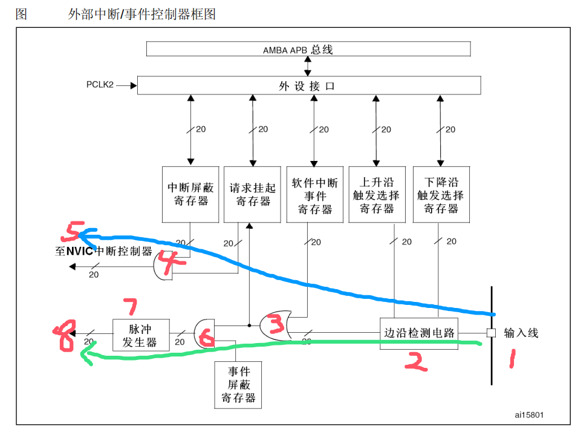
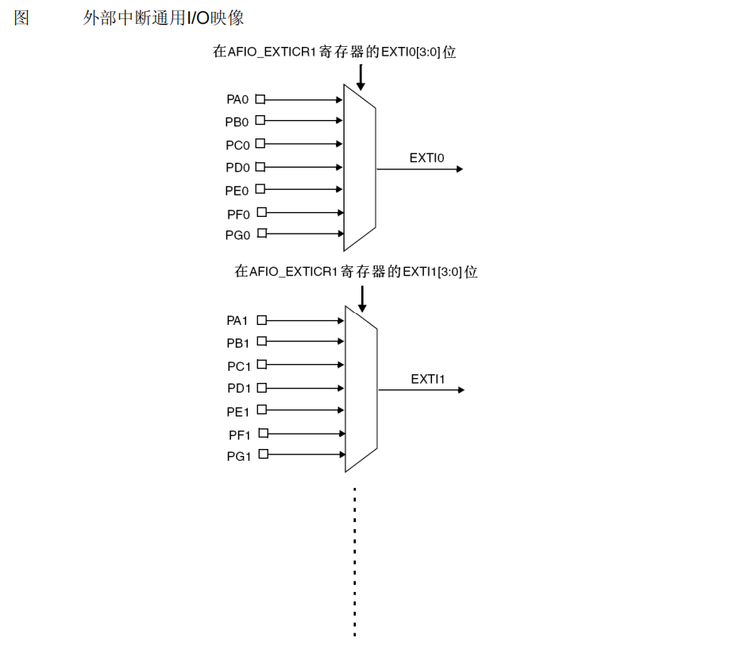

EXTI外部中断
01. EXTI简介
通过STM32F10x参考手册，对EXIT的总结如下：
EXTI（External interrupt/event controller）—外部中断/事件控制器，管理了控制器的20个中断/事件线。 每个中断/事件线都对应有一个边沿检测器，可以实现输入信号的上升沿检测和下降沿的检测。EXTI可以实现对每个中断/事件线进行单独配置， 可以单独配置为中断或者事件，以及触发事件的属性。
02. EXTI功能框图
EXTI可分为两大部分功能，一个是产生中断，另一个是产生事件，这两个功能从硬件上就有所不同。
首先我们来看图中蓝线指示的电路流程。它是一个产生中断的线路，最终信号流入到NVIC控制器内。
编号1是输入线，EXTI控制器有19个中断/事件输入线，这些输入线可以通过寄存器设置为任意一个GPIO，也可以是一些外设的事件，输入线一般是存在电平变化的信号。
编号2是一个边沿检测电路，它会根据上升沿触发选择寄存器(EXTI_RTSR)和下降沿触发选择寄存器(EXTI_FTSR)对应位的设置来控制信号触发。 边沿检测电路以输入线作为信号输入端，如果检测到有边沿跳变就输出有效信号1给编号3电路，否则输出无效信号0。 而EXTI_RTSR和EXTI_FTSR两个寄存器可以控制需要检测哪些类型的电平跳变过程，可以是只有上升沿触发、只有下降沿触发或者上升沿和下降沿都触发。
编号3电路实际就是一个或门电路，它的一个输入来自编号2电路，另外一个输入来自软件中断事件寄存器(EXTI_SWIER)。EXTI_SWIER允许我们通过程序控制就可以启动中断/事件线， 这在某些地方非常有用。我们知道或门的作用就是有1就为1，所以这两个输入随便一个有有效信号1就可以输出1给编号4和编号6电路。
编号4电路是一个与门电路，它的一个输入是编号3电路，另外一个输入来自中断屏蔽寄存器(EXTI_IMR)。与门电路要求输入都为1才输出1， 导致的结果是如果EXTI_IMR设置为0时，那不管编号3电路的输出信号是1还是0，最终编号4电路输出的信号都为0；如果EXTI_IMR设置为1时， 最终编号4电路输出的信号才由编号3电路的输出信号决定，这样我们可以简单的控制EXTI_IMR来实现是否产生中断的目的。 编号4电路输出的信号会被保存到挂起寄存器(EXTI_PR)内，如果确定编号4电路输出为1就会把EXTI_PR对应位置1。
编号5是将EXTI_PR寄存器内容输出到NVIC内，从而实现系统中断事件控制。
接下来我们来看看绿线指示的电路流程。它是一个产生事件的线路，最终输出一个脉冲信号。
编号6电路是一个与门，它的一个输入来自编号3电路， 另外一个输入来自事件屏蔽寄存器(EXTI_EMR)。如果EXTI_EMR设置为0时，那不管编号3电路的输出信号是1还是0，最终编号6电路输出的信号都为0； 如果EXTI_EMR设置为1时，最终编号6电路输出的信号才由编号3电路的输出信号决定，这样我们可以简单的控制EXTI_EMR来实现是否产生事件的目的。
编号7是一个脉冲发生器电路，当它的输入端，即编号6电路的输出端，是一个有效信号1时就会产生一个脉冲；如果输入端是无效信号就不会输出脉冲。
编号8是一个脉冲信号，就是产生事件的线路最终的产物，这个脉冲信号可以给其他外设电路使用，比如定时器TIM、模拟数字转换器ADC等等，这样的脉冲信号一般用来触发TIM或者ADC开始转换。
产生中断线路目的是把输入信号输入到NVIC，进一步会运行中断服务函数，实现功能，这样是软件级的。而产生事件线路目的就是传输一个脉冲信号给其他外设使用， 并且是电路级别的信号传输，属于硬件级的。另外，EXTI是在APB2总线上的，在编程时候需要注意到这点。
03. 中断/事件线映像（GPIO复用）
112通用I/O端口以下图的方式连接到16个外部中断/事件线上：
由图可以知道EXTI0可以通过AFIO的外部中断配置寄存器1(AFIO_EXTICR1)的EXTI0[3:0]位选择配置为PA0、 PB0、PC0、PD0、PE0、PF0或者PG0。
EXTI0、EXTI1、EXTI2、EXTI3、EXTI4在中断向量表中是单独地址，而EXTI9_5、EXTI15_10是另外两个地址，EXTI16连接到PVD输出、EXTI17连接到RTC闹钟事件、EXTI18连接到USB唤醒事件、EXTI19连接到以太网唤醒事件（只适用于互联型产品）。
04. 代码
在STM32设置外部中断步骤如下：
- 先给需要使用的GPIO和AFIO时钟进行使能，实现GPIO的初始化
- 通过AFIO实现引脚映射，完成了对外部中断源输入线的设置（确定好映射的引脚之后，也就意味着确定了需要检测的EXTI线）
- 然后对EXTI进行配置，确定需要检测的信号（上升沿、下降沿还是都检测）
- 配置NVIC中断分组（这个中断分组在整个工程中只能设置一次），根据选择的中断分组在NVIC配置中确定抢占优先级和响应优先级，并配置NVIC外设
1 |
|